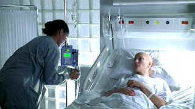

| Wit/ B, A- |
| HBO/2001/99/ANA 1.85 |
Talk about a challenge: Wit details literature professor Vivien Bearing's battle with cancer. Unlike other films that deal with disease, Wit confines itself almost exclusively to the hospital wing, a stark barrier to overcome. Ultimately, Wit is disappointing in the way Bearing accepts her fate. There's little fight, only recognition and resolve. How could this character put herself into the hands of the clinicians and lose the poetry of her life? Was it in keeping with the sharp-witted character portrayed? It's a difficult question to answer. Would she stand for yet another examination to please her doctor?
 |
| Bearing faces the unbearable. ©HBO |
Bearing examines herself with the same clinical
candor that doctors treat her cancer. The lack of humanity in the
hospital ward may be a fact of life, but it doesn't make for sympathetic
viewing. In an interesting stroke, one of the young doctors treating
Bearing is a former student, which helps illuminate aspects of her
character. Bearing, unmarried, attached to her work with the cold
passion of a zealot, ultimately is the best observer of her own
life.
Structurally Wit is essentially a performance play. Skilled
direction from Mike Nichols prevents the stage adaptation from feeling bound
by its origins even though it is a mostly static film. Nichols
knows where to position his camera to best effect. But, he's a cold
director for a cold story. There's not much room for sentiment in Wit.
Emma Thompson is wonder: Brave, fully exposed, backing
away from nothing. She illuminates Vivien Bearing. There's never a
doubt about the superior intelligence of this woman. Audra
McDonald plays Bearing's nurse, virtually the only sympathetic character in the
film She does an excellent job of maintaining Bearing's dignity
through various stages of the film.
The transfer is first rate. Hospital lighting is
cold yet natural. Color is well saturated. Sharp images throughout. You can catch every nuance of
Thompson's performance, every change in her skin texture or lips that
are more dried out than in previous scenes. The images are revealed as
transparently as Bearing's character. Black level is deep and shadow
detail has effective range. Dolby Digital 2 channel stereo delivers an
open sound stage for the music and dialogue is crisply enunciated.
|
Film noir: The phrase hangs awkwardly on the tongue, shadowy images peek out from behind half-closed doors. Click on the Noir and Noir Again symbol for a look into the dark spaces of Hollywood's revisiting of film noir.
|